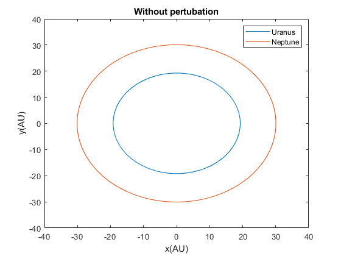
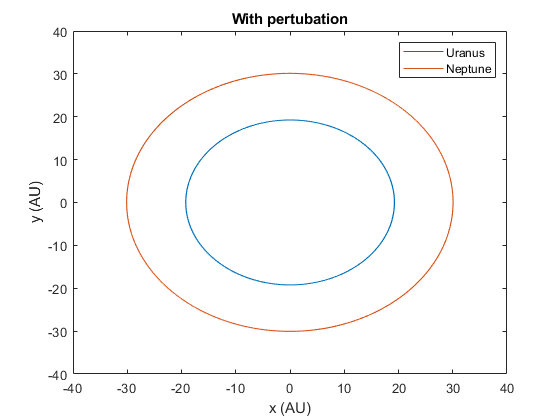
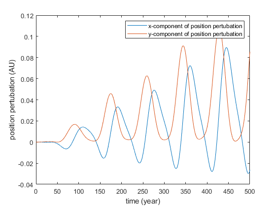
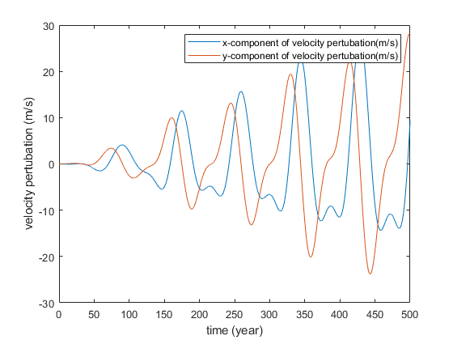

Problem 1
Simulating orbits for Neptune and Uranus.
Contents
(a)
Orbits for Neptune and Uranus where interactions between each other are ignored.
clear clc % Data and initial condition: SM = 1.98847e30; % solar mass mass = [4.366244e-5*SM, 5.151389e-5*SM, SM]; % Masses of Uranus, Neptune, and Sun AU = 1.495978707e11; % astronomical unit d = [19.1914*AU, 30.0611*AU,0]; % Distance to the sun y = 365.2422222*24*3600; % a year in sec T = [84.0110*y, 164.7901*y, 1]; % periods v = (2*pi.*d)./T; % velocities theta = [205.64*pi/180, 288.38*pi/180, 0]; % initial angular positions % Calculate & plot orbits tvec = (0:0.05:500).*y; [xtu,ytu,vxtu,vytu] = compute_orbits_RK4_nbody([cos(theta(1))*d(1),0],... [sin(theta(1))*d(1),0], [sin(theta(1))*v(1),0],... [-cos(theta(1))*v(1),0], [mass(1),mass(3)], tvec); [xtn,ytn,vxtn,vytn] = compute_orbits_RK4_nbody([cos(theta(2))*d(2),0],... [sin(theta(2))*d(2),0], [sin(theta(2))*v(2),0],... [-cos(theta(2))*v(2),0], [mass(2),mass(3)], tvec); figure(1); plot(xtu(:,1)/AU,ytu(:,1)/AU,xtn(:,1)/AU,ytn(:,1)/AU); legend('Uranus','Neptune'); title('Without pertubation'); xlabel('x(AU)');ylabel('y(AU)');
(b)
The force of gravity between each other are included.
[xt3,yt3,vxt3,vyt3] = compute_orbits_RK4_nbody([cos(theta(1))*d(1),cos(theta(2))*d(2),0],... [sin(theta(1))*d(1),sin(theta(2))*d(2),0],... [sin(theta(1))*v(1),sin(theta(2))*v(2),0],... [-cos(theta(1))*v(1),-cos(theta(2))*v(2),0], [mass(1),mass(2),mass(3)], tvec); figure(2); plot(xt3(:,1)/AU,yt3(:,1)/AU,xt3(:,2)/AU,yt3(:,2)/AU); legend('Uranus','Neptune'); title('With pertubation'); xlabel('x (AU)');ylabel('y (AU)');
Analysis
figure(3); plot(tvec/y,(xtu(:,1)-xt3(:,1))/AU,tvec/y,(ytu(:,1)-yt3(:,1))/AU); legend('x-component of position pertubation','y-component of position pertubation'); xlabel('time (year)');ylabel('position pertubation (AU)'); figure(4); plot(tvec/y,(vxtu(:,1)-vxt3(:,1)),tvec/y,(vytu(:,1)-vyt3(:,1))); legend('x-component of velocity pertubation(m/s)','y-component of velocity pertubation(m/s)'); xlabel('time (year)');ylabel('velocity pertubation (m/s)'); 
From the point of view of the Uranus, when it is away from the Neptune, it experiences less acceleration than when it is closer to Neptune. Also, as it approaches Neptune, it experiences positive acceleration, while when it leaves the Neptune, the acceleration is negative. So there is a periodic change in acceleration due to the Neptune. That causes the difference in position and velocity calculated in two cases. In addition, since the time period I used is 500 years, which is approximately 6 orbital period of the Uranus, which means the Uranus also passing through the Neptune for 6 times. That explains 6 peaks and troughs in the plots.